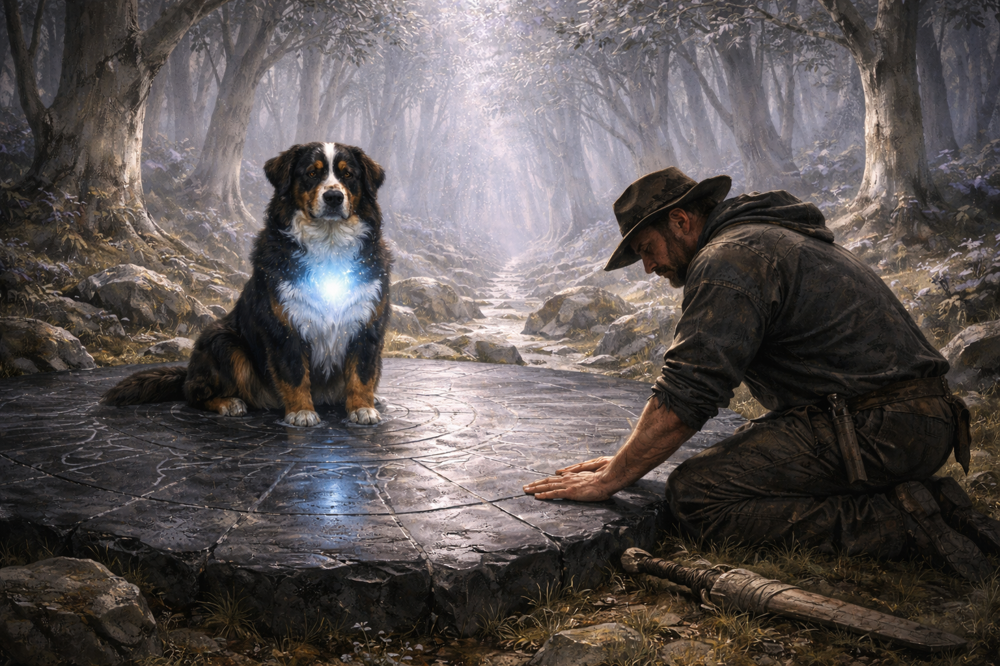

Chapter 38 — The Attempt

On the second day of walking, I decided to stop waiting for danger to teach me.
We were moving through a wide section of forest where the silverleaf thinned and the ground levelled into soft grass. Elira had gone ahead to scout a crossing point over a ridge she knew, leaving me alone with Merlin for the better part of an hour. No threat. No urgency. Just the creak of the forest and the morning light cutting pale through the canopy.
I sat on a fallen trunk, set the sword beside me, and thought about what I knew.
Three activations of the Sight. Three times when someone I cared about was in immediate danger. Each time: the break in my chest, the world resolving into threads and geometry, the pull, and then the dark. Consistent enough to be a pattern. Inconsistent enough that I'd nearly died twice waiting for it to show up.
In consulting, you never left a critical capability dependent on a crisis to trigger it. You built the process, you ran the drill, you made sure the tool worked before you needed it. Relying on adrenaline was what amateurs did. I was a professional. Nominally.
So. The Sight. Let's see if we can have a proper meeting about this.
I closed my eyes and reached for the feeling I remembered from the Caller's hall. The heat in the chest. The geometry snapping into focus. I pressed inward, willing the world to show me its bones.
Nothing.
I tried again, slower this time, the way you'd approach a nervous client. Patient. Non-threatening. I breathed deep and imagined the threads, tried to picture them running through the wood under my hands, the roots beneath the grass, the weight of the air.
Still nothing. Just the birdsong and a beetle picking its way across my boot.
Merlin watched from three paces away, head cocked, ears at the precise angle that in Hampshire had meant: I know exactly what you're doing and it isn't working.
"Helpful," I told him.
He yawned and looked away.
I tried four more times over the next hour, varying the approach each time, the way you'd iterate a failing strategy. Concentration. Emotion. Physical stillness. Physical movement—I stood and walked slowly, hands out, trying to feel something in the air between my fingers. I held the sword, thinking its presence might act as a catalyst the way it had briefly at the altar. I touched the bark of a tree, pressing my palm flat, half-expecting the lattice to appear the way it had in the Caller's stone halls.
Each attempt produced the same result, which was no result at all.
I sat back down, irritated. In every account of magical training I'd ever encountered — and I'd read more than I should admit, having spent enough airport layovers with fantasy novels — there was some formative scene where the protagonist pushed past frustration and broke through. The moment of surrender, or the moment of rage, or the hidden reservoir of belief they'd been holding back. The internal threshold crossed.
But I'd already crossed every threshold I could think of. I'd killed two men. I'd escaped a fortress. I'd watched Merlin take a blow meant to stop him forever. If any of that hadn't been enough to unlock some deeper reservoir of power, then the reservoir simply wasn't fillable on demand.
Which meant the pattern I'd identified was the actual mechanism, not a starting point. The Sight came when the people I loved were in danger, and not before. It wasn't a skill I could develop. It was a reflex.
Or — and this was the thought that bothered me more — it wasn't mine to control at all. It was something done to me, or through me, and the trigger was the only condition under which whatever it was would consent to operate.
I disliked that intensely.
Merlin got up then. Not urgently, not with his hackles raised, just a purposeful rise from his haunches that meant he'd decided to go somewhere. He padded past me into the trees, chest glowing its steady low blue-white, tail carried level.
"Merlin."
He looked back once, which in his language meant: coming or not?
I picked up the sword and followed.
He led me perhaps two hundred metres through the silverleaf, angling slightly downhill, until the trees opened around a slab of exposed rock maybe four metres across. Ancient, by the look of it — the stone was the same black rock as the mountains we'd come through, but the surface was worn glassy smooth, and carved into it in a spiral pattern were lines so fine they might have been cracks until you crouched and saw the intentionality, the regularity, the deliberate weight of old hands.
Merlin walked onto the slab and sat in its centre, tail curled over his paws. His chest burned brighter here, not pulsing, just brighter — the white deepening, the trace of blue more visible, like moonlight intensifying as clouds clear.
I crouched at the edge, running a finger along one of the carved lines. It was cold. Much colder than the surrounding stone. The kind of cold that suggested depth, as though the line went far deeper than the inch of rock it appeared to cut.
I set my palm flat on the surface.
Not the desperate, white-knuckled press of my earlier attempts. Just a hand on stone. Curious. Listening.
It was barely anything. A current, the way you feel a river through the hull of a boat — not touching you, but present, the suggestion of movement far below. The faintest geometry at the edge of perception, like something glimpsed from the corner of an eye that vanishes when you turn to look.
I stayed very still and didn't look directly at it.
The current didn't strengthen. It didn't resolve into threads or lattice or the sharp-edged world I'd seen in the Caller's hall. But it was there, and it was real, and it knew the stone was carved and why, which was more than I'd managed in an hour of determined effort on a log twenty metres away.
After a while I sat back on my heels. Merlin watched me from the centre of the slab, eyes pale and calm.
"You knew it was here," I said.
He blinked, which was not an answer, but felt like one.
"How long have you been able to do that? Find these places?"
He blinked again. Then he yawned enormously, showing every one of his teeth, which I chose to interpret as a metaphysical response.
The thing was, I had no idea what Merlin was. I'd had him for four years, found him at a rescue centre in Winchester when he was eight months old and already enormous, already trouble. He'd been listed as a Bernese Mountain Dog cross — poodle somewhere in the mix, the vet had speculated, which explained the curls — with an assessment that said he was unlikely to be suitable for flat living, which was the polite way of saying nobody wanted him. I'd taken him home to the farm and he'd proceeded to be the most straightforwardly loyal creature I'd ever met, a dog by every measure I had available — until the fire circle had opened and his chest had blazed white and he'd stood as tall as a horse and broken a summoning ritual through sheer refusal to accept it.
I'd been so focused on my own situation — the summoning, the Caller, the Sight, the sword, the killing, the road to Thornfield — that I'd bracketed Merlin as a given. My dog. My constant. The one element of this situation that needed no analysis because he was Merlin and he was there and he was fine.
But he'd found this stone. He was sitting on it now with the ease of something that belonged. His chest glowed not because of danger or distress but because this place called it out of him as naturally as light from a lamp.
He had always been able to find things. Livestock that had pushed through fences in the dark. A ewe down in a ditch two fields away in fog so thick I couldn't see my hand. A poacher's snare buried under bracken. I'd always put it down to nose. But standing here, watching the cold blue-white light pulse gently in his chest as the carved stone held its cold and deep current beneath my palm, I wondered if nose had ever been the right word.
"What are you?" I asked him, not for the first time.
He stood, stretched the way only dogs can stretch, with total commitment and zero self-consciousness, then trotted off the slab and pushed his head against my ribs.
I pressed my forehead to his. He smelled of forest and stream and something underneath that had no name, the particular warmth of him that I had known since Winchester and that nothing in this world or any other was going to take from me.
"Alright," I said. "Table it for now."
We were halfway back to the fallen trunk when Elira appeared through the trees, basket on her hip, eyebrows raised at whatever she read on my face.
"Find something?"
"Old stone. Carved. Merlin found it, not me."
She glanced at him. He wagged once, collegially. Her eyes went thoughtful. "Carved how?"
"Spirals. The same lines as the temple. Fine, deliberate. Cold in a way that goes through the rock."
She was quiet for a moment, adjusting the basket strap. "The old ones didn't only build temples," she said at last. "They marked the places where the bones of the world run close to the surface. Way-stones. Nodes, some called them. Put them wherever the power pooled." She looked at Merlin again, something careful in her expression. "And your dog walked straight to it."
"He did."
"Can he always do that?"
"I'm starting to think he always could. I just didn't know what I was watching."
She nodded slowly, as though this confirmed something she hadn't quite been ready to voice. She opened her mouth, then closed it again. Not evasion — deliberation. The difference mattered.
"Say it," I said.
"There are old accounts," she said carefully, "of the First Weavers and their bonded beasts. Not pets. Not companions in any simple sense. They were said to anchor the Weaver — to be the part of the power that was already awake, while the Weaver learned to wake their own." She paused. "The beasts always knew where the nodes were. They always knew when their Weaver was close to the Sight, before the Weaver themselves did."
I looked at Merlin. He was already looking at me, ears forward, chest bright.
Not my dog discovering his magic in a new world. My dog, who had always been the older half of something I was only beginning to understand.
The consultant's instinct tried to file this information neatly. First Weavers. Bonded beast. Anchor. Defined roles, clear system, established precedent. See, this isn't so complicated once you have the taxonomy.
The rest of me looked at Merlin's face — the familiar brown eyes, the grey muzzle, the daft pointed ears that had listened to four years of my problems through farmhouse walls — and found taxonomy was not adequate to the occasion.
"Two more days to Thornfield," Elira said, giving me the mercy of a change of subject. "We should move."
She set off between the trees. Merlin fell in at her heel, then looked back at me once, waiting.
I shouldered the sword, picked up the club, and caught up with them.
Whatever the Sight was, I hadn't unlocked it today. Whatever Merlin was, I hadn't resolved it. I had one unreliable power, one ancient sword, one herbalist with a dead sister and a fighting pouch, one glowing dog who found magic stones in the woods, and two days' walk to a settlement that might be willing to listen.
It was, by any reasonable metric, a terrible position.
But I'd sat in worse rooms with worse numbers and found the angle that worked. You didn't need everything in place. You needed one thing the other side hadn't accounted for.
I watched Merlin's chest glow cold and white between the silver trees, steady as a heartbeat, already knowing the next node before either of us had seen it.
The Caller hadn't accounted for him. That might be enough to start.